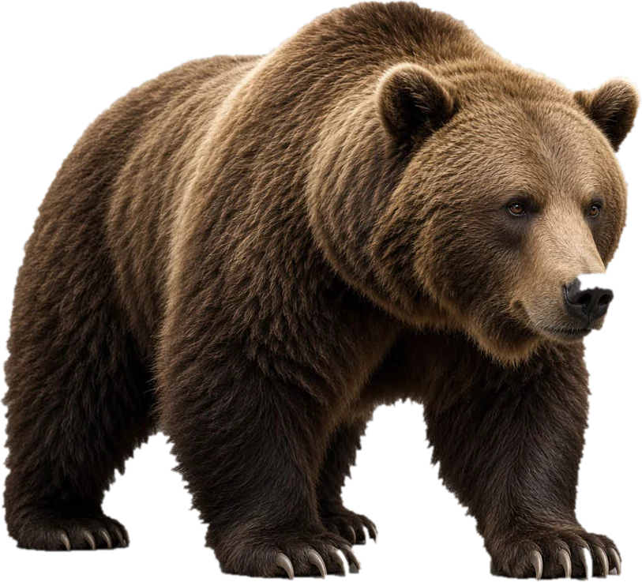
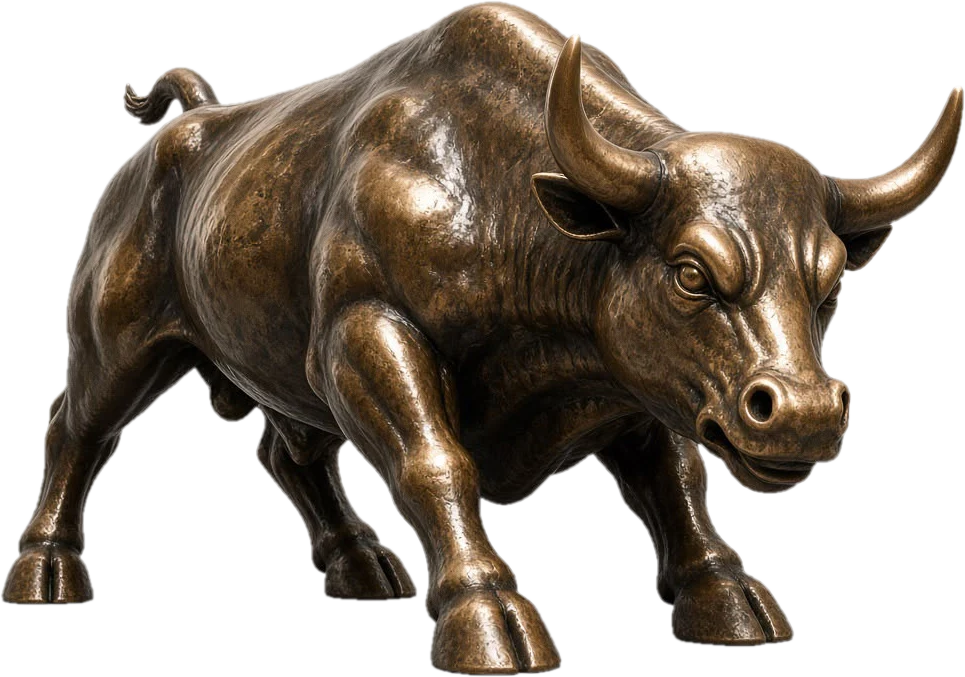

Is the stock market in bull or bear territory? We blend 8 market health signals into one reading.


How it works: each signal is scored 0 (fully bearish) to 100 (fully bullish), then averaged with equal weight. A 20% fall from a recent high is the traditional definition of a bear market. This is for education only and isn’t financial advice. Past signals don’t predict future returns.